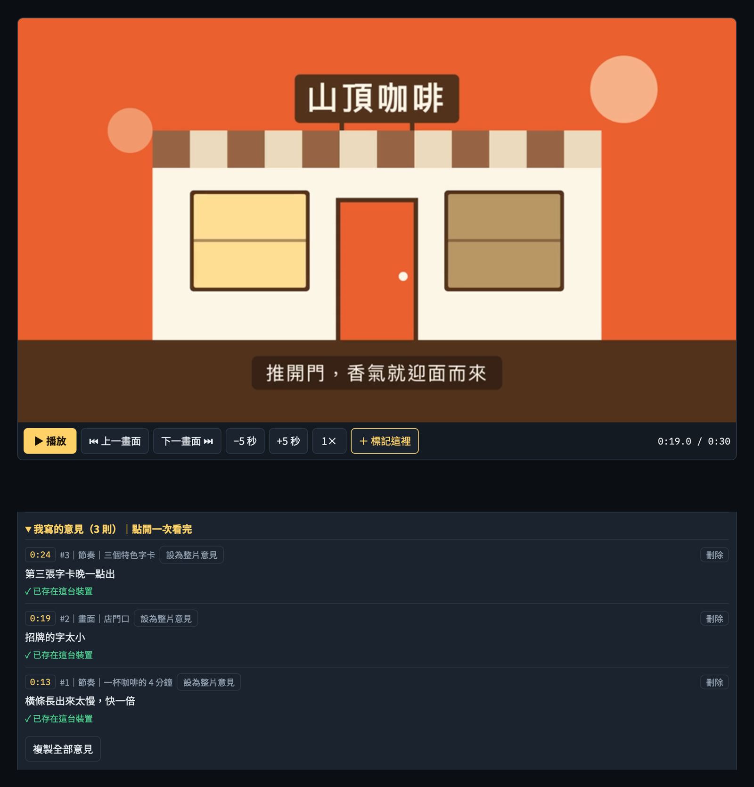
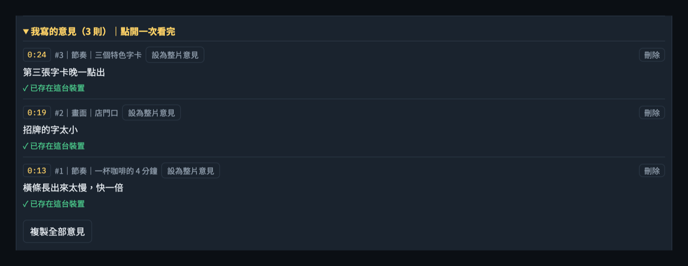
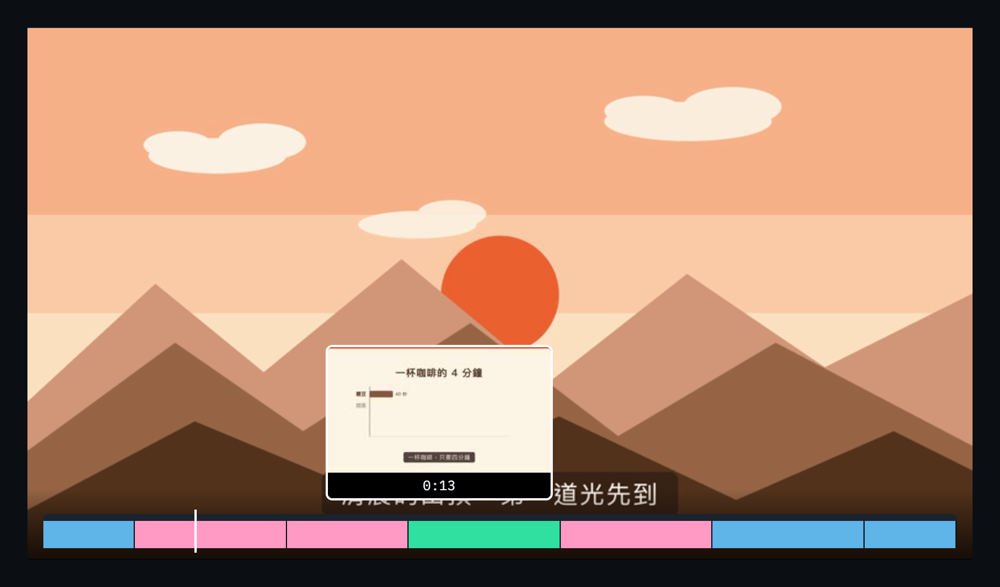
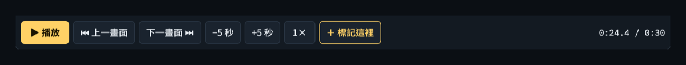
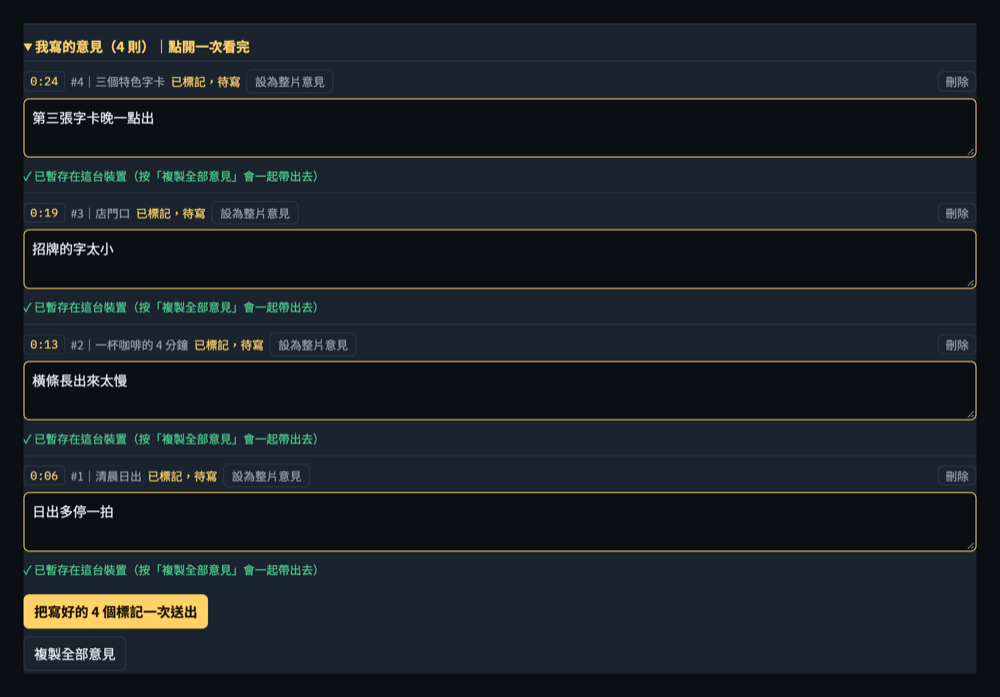
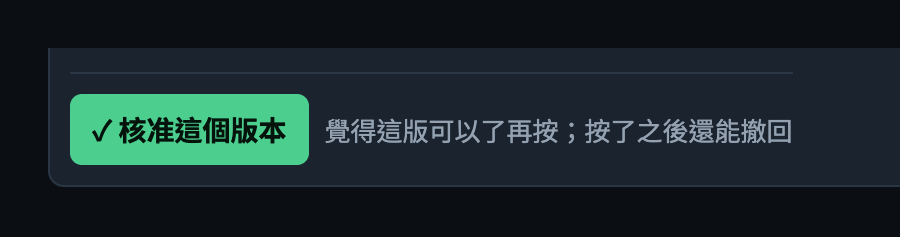
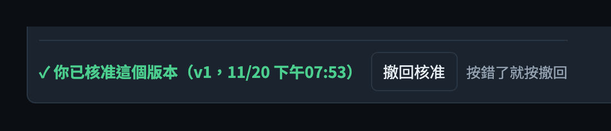
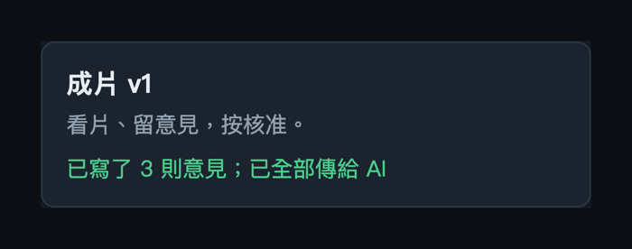

審片台快速上手
AI 做片，你審片。點哪裡，它就改哪裡。
到 GitHub 取得
github.com/betterconnie/review-desk
免費、MIT 授權、開源
需要什麼
- Python 3.9 以上
- ffmpeg
- 一個 AI 代理（Claude Code、Codex 等）
安裝
git clone https://github.com/betterconnie/review-desk ~/.claude/skills/review-desk
或直接跟你的 AI 說：「從 github.com/betterconnie/review-desk 安裝 review-desk 這個技能」
怎麼用
1
跟你的 AI 代理說：「開審片台。」它會把成片變成一個網頁，在你的瀏覽器打開。
2
看片、標記、寫意見。按 ▶︎ 播放 或拖時間軸。停在想改的地方，寫字，按 在 0:19 加上意見。

3
點開 我寫的意見，按 複製全部意見，貼回對話。

審片更快的四個動作
1
拖時間軸，預覽每一格
滑鼠移到影片上，會出現整支片的總覽時間軸。拖它就能一格一格預覽。手機上點一下畫面就會出現。

2
邊看邊標
看到問題就按 ＋ 標記這裡。影片繼續播，不用先寫字。

3
看完再補字
點開 我寫的意見，在每個標記下面補上字。按 把寫好的 4 個標記一次送出，或直接按 複製全部意見，寫好的草稿會一起帶出去。

4
一鍵複製整份清單
按 複製全部意見，貼上去。每一則都帶著時間、鏡頭名和素材來源。
【v1】審片台傳來：意見 4 則；整版還沒核准。 [0:06｜鏡頭 2〈清晨日出〉｜自製，無外部素材] 日出多停一拍 [0:13｜鏡頭 4〈一杯咖啡的 4 分鐘〉｜自製，無外部素材] 橫條長出來太慢 [0:19｜鏡頭 5〈店門口〉｜自製，無外部素材] 招牌的字太小 [0:24｜鏡頭 6〈三個特色字卡〉｜自製，無外部素材] 第三張字卡晚一點出
核准
按 ✓ 核准這個版本，它會變成 確定核准？再按一次。4 秒內再按一次才生效。
出了新版本，舊版的核准不算，新版要重新核准。按錯了就按 撤回核准。只有你自己按的才算。


用手機審（選用）
- 先把審片台放上網：用你自己的 Netlify 網站，照
cloud/README.md做。 - 放上去之後，用手機打開網址。點一下畫面，時間軸就會出現。
- 按 傳給 AI，再回對話跟 AI 說一聲你傳了。它不會自己被叫醒。
- 沒設密碼之前，拿到網址的人都看得到片，也能寫意見。

要知道的事
- 影片預設留在你的電腦。審片台只開一個本機網頁，影片和意見都不會上傳。頁面只會向 Google Fonts 要字型檔。
- 本機模式的意見只存在那台電腦的瀏覽器。
- 自動偵測鏡頭看的是亮度差，亮度接近的兩個鏡頭可能切不出來。可以用
--scene 0.1，或自己列鏡頭清單。 - 目前只實際配過 Claude。意見是純文字，可以貼給任何 AI。